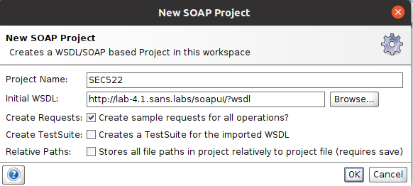
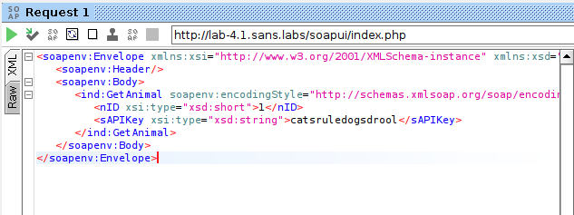
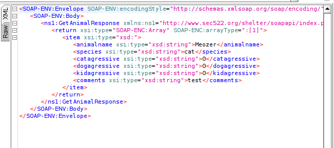

WSDL Enumeration and Parameter Tampering
Objectives
Estimated Time: 10 minutes
In this exercise, we will experiment with the SOAP Web Services injection and request manipulation techniques. The emphasis is on the fact that Web Services can be attacked just like a standard HTTP request in the case of a normal Web Application.
Requirements
- [x] Lab VM
No Hints
Go to http://lab-4.1.sans.labs/soapapi/?wsdl. Inspect the WSDL (this will be a lot easier with a tool like SOAPUI. See the left "Favorite" bar). There are two requests that do not require authentication. Identify the one that is sensitive and try to retrieve data.
Step by Step
-
Go to http://lab-4.1.sans.labs/soapapi/?wsdl. Your browser is a very good viewer for XML content, such as the WSDL file. With the WSDL content now on the screen, we can look for operations.
-
Look for operations listed in the WSDL file; specifically, look for the operation tag. You should be able to find it inside the portType element. If it is too hard to find the operation tag, press Ctrl-F to find the string on-screen.
The operations in this WSDL are as follows: GetDayofWeek, GetAnimal, GetUser and GetUserName. So there are four operations listed by this WSDL.
-
Open SoapUI by clicking on the SoapUI icon on the left side of the screen. This application will take a full minute to load. Once loaded, you need need to skip through the offer to collect your personal information. Also close the Endpoint Explorer that pops up.
SoapUI Icon
-
Create a new project by clicking on the link from the main screen or through File > New SOAP Project from the menu or the hotkey combination Ctrl + N. When the New SOAP Project dialog opens, give your new project a name (e.g., "SEC522"), and load the WSDL from the URL -
http://lab-4.1.sans.labs/soapapi/?wsdl
Creating a New SOAP Project in SoapUI.
-
Click "OK".
This will load the WSDL and on the left-hand side you will see the "Operations". The operations in this WSDL are as follows: GetAnimal, GetDayofWeek, GetUser, and GetUserName, as we gathered in an earlier part of this exercise.
-
Click on the "+" to the left of "GetAnimal" and double-click on "Request 1".
-
In the following request window, enter an ID (e.g., 1) in the appropriate spot in the XML. SoapUI prefills the location with a "?". The API Key is catsruledogsdrool.

XML Snippet for SOAP Request
-
Next, click on the little "" ("Play") icon in the upper left-hand corner of the request window.
You should now see the response in parsed XML.

-
XML Response in SoapUI.
With this example, the NetWars challenges for this section should be straight forward. Each of them require a different request to the SOAP API. There are hints available for each if required.
Conclusion
- XML based Web Services are common and while they are intended to communicate from machine to machine, it is possible to use clients such as SoapUI to interact with the service and exploit any flaws that are in the system.
Explore Further
- Interact with public SOAP based web services such as http://www.dneonline.com/calculator.asmx